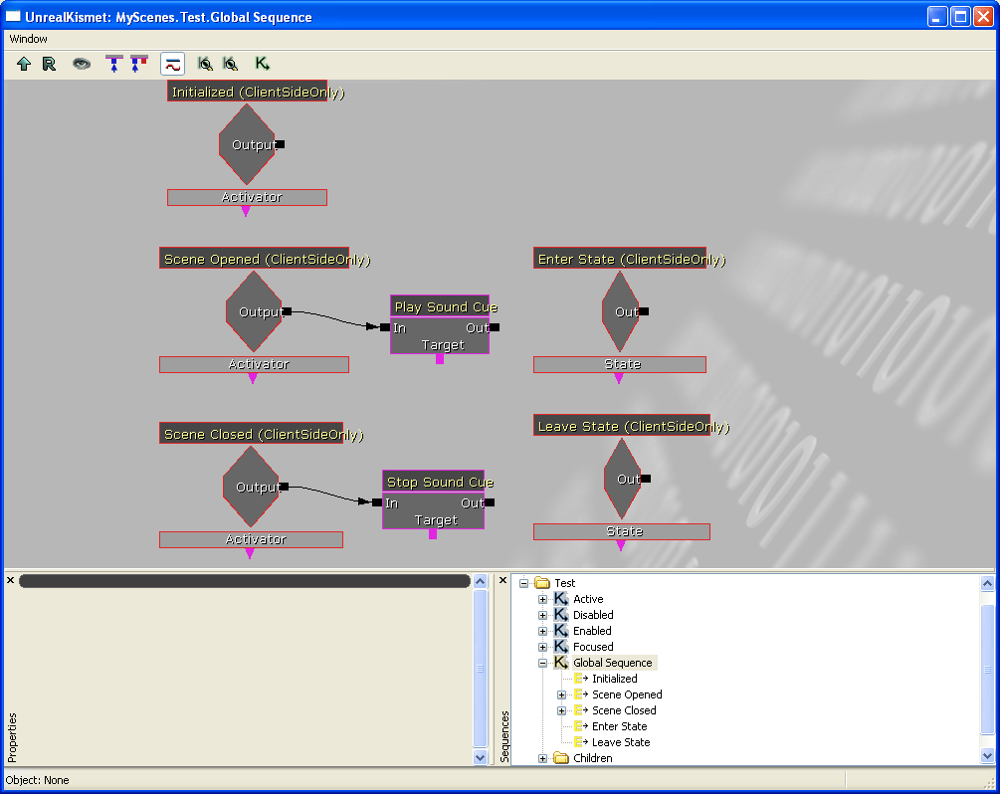

Solid Snake/Using Unreal Engine 3.0s UIScene
How to use Unreal Engine 3.0's UIScene Editor
Introduction
This tutorial will show you how to use Unreal Ed 4.0's UIScene/UISkin editor. It appears now that Unreal Engine 3.0 has become so readily adopted by so many game companies/publishers, Epic has finally decided to make an editor for UI's. There are a lot of benefits to doing this, first this kind of tool is really appealing to those who simply want to get the basics of their game up and running. Menus are often one of the last few steps in any game production. Of course this is one of the main reasons why game menus almost always suck. Anyways, with Unreal Engine 3.0, there is now a built-in editor which means at any point in development the user can start making menus, without requiring the involvement of a programmer (as was the case with Unreal Engine 2.0). Also, UIScene is directly tied with Kismet to power its functionality, so again the programmers in the team are not as involved in menu creation as they were before. This sounds like a bad thing for programmers, removing one of the tasks they have to do, but I can assure you (and many other programmers will also tell you), programmers have a lot more to worry about than menus. The only real involvement programmers have with menus is the creation of Kismet elements, which I will also show in this tutorial. The basic set of UI Kismet functions allow you to do most things, however, there are some which require a bit more scripting.
So, lets get into the Unrealscript now. Since we would need to code these things first .. and then let UnrealED load them. You can do it the other way around, but it means you have to flick between using the editor and compiling code (which you can't do at the same time by the way).
Aim
![[UE3UI_Title]](images/ue3ui-title.gif) |
This is what we want to create at the end of the tutorial. A 'fully' functional menu like this. By fully functional, I mean that the basic buttons work and link to something. I also added some other small minor details ... but from here I am sure other people will get the idea of how things work.
Unrealscript
If you aren't a programming/Unreal Scripter, then you can just skip this part.
While it isn't 100% neccessary, if you are purely a graphics artist, you may want to pass your completed scene over to a programmer so that he can add the functionality. This is because, while Kismet is great, it is macro way of doing 'script' as such. You join elements together, and connect them up ... but what exactly those elements do is out of your control. You can change some of them, as they will accept inputs and they change accordingly (such as the log/console elements), but if you need something rather specific, you'll be out of luck.
In this case, I needed better sound-playing elements. The UI sound elements were limited in that they could only play back sound cues set up in UISkin. The major problem with this was that there were very few UISkin sound cues, so if I wanted to create a menu with dozens of sounds ... it would be hard. Therefore I wrote these Kismet UI elements.
00001 class xUIPlaySound extends UIAction; 00002 00003 var() SoundCue SoundCue; // Make this variable available for the editor to adjust. 00004 00005 function Activated() 00006 { 00007 local WorldInfo wii; // Oh lolz! 00008 00009 if(SoundCue == none) // Check that we have a valid sound cue. If not, return. 00010 return; 00011 00012 wii = GetWorldInfo(); // Get the world info 00013 00014 if(wii != none) // Check we have a valid world info 00015 wii.PlaySound(SoundCue); // Play sound 00016 } 00017 00018 defaultproperties 00019 { 00020 ObjName="Play sound Cue" // This is a the name of the Kismet element which shows up in the editor 00021 ObjCategory="Sound" // The category which the element belongs in. You can make new ones 00022 Name="Default__UIAction_xUIPlaySound" // Just a default name for the object 00023 HandlerName="xUIPlaySound" // You'll need this to prevent script errors, I just have this the same as the class, but it could be anything 00024 bCallHandler=true // Unsure at this point 00025 ObjectArchetype=UIAction'Engine.Default__UIAction' // The default template 00026 }
Alright, so this class just plays back a sound. If your wondering what WorldInfo is, WorldInfo is a lot like LevelInfo. I guess, with streaming levels, it made more sense to encompass some variables in the entire 'world' rather than each individual level. When Kismet elements are 'called', the Activated function gets run (from native script I believe). So once this class got activated, it got the WorldInfo (via a native function) and asked the WorldInfo to play a sound (this was possible as WorldInfo is an actor).
00001 class xUIStopSound extends UIAction; 00002 00003 var() SoundCue SoundCue; 00004 var() float FadeOutTime; 00005 00006 function Activated() 00007 { 00008 local WorldInfo wii; // Oh lolz! 00009 local PlayerController C; 00010 00011 if(SoundCue == none) 00012 return; 00013 00014 wii = GetWorldInfo(); 00015 00016 if(wii != none) 00017 { 00018 foreach wii.AllControllers(class'PlayerController', C) 00019 if(C != none) 00020 C.Kismet_ClientStopSound(SoundCue, wii, FadeOutTime); 00021 } 00022 } 00023 00024 defaultproperties 00025 { 00026 ObjName="Stop Sound Cue" 00027 ObjCategory="Sound" 00028 Name="Default__UIAction_xUIStopSound" 00029 HandlerName="xUIStopSound" 00030 bCallHandler=true 00031 ObjectArchetype=UIAction'Engine.Default__UIAction' 00032 }
I decided that I would probably need a stop sound function. On testing, I found that it did work for what I was using it for (to leap in the future, I used this for stopping the music playback). Its nothing out of the ordinary.
00001 class MyGameInfo extends rbarenapersistentgameinfo; 00002 00003 static function class<GameInfo> SetGameType(string mapname, string options) 00004 { 00005 local int i; 00006 00007 i = instr(caps(mapname), caps("RBArenaHub")); 00008 00009 if(i != -1) 00010 return super.SetGameType(mapname, options); 00011 else 00012 return class'MyGameInfo'; 00013 } 00014 00015 defaultproperties 00016 { 00017 PlayerControllerName="" 00018 PlayerControllerClass=class'MyTestPackage.xPlayer' 00019 }
This is a slight extension to my previous tutorials, and all it does is that it spawns my own player controller. However, if the map requested was RBArenaHub, it would return the default function result (RoboBlitz's structure was a little strange to me.. so yeah). You'll need to read the other tutorial to learn how to get a UIScene to appear using UScript.
UnrealED 4.0
This tutorial will assume that you know the basics about UnrealED 4.0. There are lots of tutorials around, so look them up if you need to. So start with opening up the 'Generic Browser', and then create a new UIScene by selecting it in the context menu (right click in the gray area, or click "New", select the correct parameters like so.
![[UE3UI_01]](images/ue3ui-01.gif) Creating a new UIScene, called 'MyScenes.Test' |
From here start populating your menu by using the context menu to add new UI elements to the scene. I used LabelButton for my buttons, and the rest were just Images. I took a lot of the art from RoboBlitz, and it works for this tutorial. Its also a really good idea to use EVALPOS_PercentageOwner, as this will look up the screen coordinates of elements percentage wise. This means that your entire scene will scale according to the screen resolution. However if you need very specifc coordinates (the close button that is always 16 pixels away from the top right corner) then you can use pixel coordinates, but be aware that they may not scale accordingly. Explore the interface a little, as it does provide a lot of tools that you can use to do things. So after a wee while I created a UI scene which looked like this. Pretty neat aye? It certainly took a lot less time than Unreal Engine 2.0 to setup.
![[UE3UI_02]](images/ue3ui-02.gif) The UI Scene that I created, well .. I didn't create the art. |
The first thing I wanted to do was to change the appearance of my buttons. They look pretty ugly with the bubbly texture in the background [I honestly wonder who made that texture, as its still surviving to this day!] as well as the default font. So lets start by creating a new UISkin. The UISkin is basically a template on how UIScenes look like. This makes it a lot easier to make a more cohesive and uniform menu system. If you are familiar with Unrealscript and the interface code for Unreal Engine 2.0, this is the equivalent to the style code in UE2.x. However, this is now all windows driven ... which makes it a lot easier to make new styles and to create new looks for your scene.
![[UE3UI_03]](images/ue3ui-03.gif) So select the Styles Tab, and click on Create New Skin [Yes I know I've already created it, but its sort of like that 'And heres one I already prepared' scenario. ![[UE3UI_04]](images/ue3ui-04.gif) And just click ok when your done |
From here, we actually need to take a break and close down UnrealEd 4.0. So save all the work you've done and open up <%ROBOBLITZ%>\RoboGame\Config\RoboEngine.ini. Find the following lines and add:
00001 [Engine.UIInteraction] 00002 ;UISkinName=MISC_DefaultLoadEngine.DefaultSkin 00003 UISkinName=MyUISkin.DefaultSkin 00004 bCaptureUnprocessedInput=True 00005 UIJoystickDeadZone=0.9 00006 UIAxisMultiplier=1.0 00007 AxisRepeatDelay=1.3 00008 UISoundCueNames=MouseEnter 00009 UISoundCueNames=MouseExit 00010 UISoundCueNames=Clicked 00011 UISoundCueNames=Focused 00012 UISoundCueNames=SceneOpened 00013 UISoundCueNames=SceneClosed 00014 UISoundCueNames=ListUp 00015 UISoundCueNames=ListDown 00016 UISoundCueNames=SliderIncrement 00017 UISoundCueNames=SliderDecrement 00018 UISoundCueNames=NavigateUp 00019 UISoundCueNames=NavigateDown 00020 UISoundCueNames=NavigateLeft 00021 UISoundCueNames=NavigateRight
From here, you can see that you could potentially add more UISoundCueNames, but its annoying having to do this in the editor at this point (or at least I think your stuck to this method at the moment). Anyways, there is still a place for UISoundCue, as it also creates a more uniform menu (when things all sound the same). This basically points the default UISkin to the new one that you made earlier. Now you can restart the editor...
![[UE3UI_05]](images/ue3ui-05.gif) |
So now you can go back to where you were before, and now you can start editing your skin. One 'bug' I found with this little menu is that, when you click on 'Save Selected Skin', it may tell you that it failed to do that. Packages in UnrealED 4.0 must be fully loaded in order to save them (I guess this prevents them from saving partial packages .. with resources that may have been needed elsewhere. It seems packages no longer cull themselves). But it doesn't tell you that. Once you fully load your package (You do this in the Generic Browser menu), you can use this menu option. Or if you want, you could just save it from the Generic Browser.
![[UE3UI_06]](images/ue3ui-06.gif) |
Anyways, once you open up the Skin Editor, you will get something that looks like this. So much better than having hundreds of styles in Unreal Engine 2.0. If you wanted to make new root styles, I think you may need to create this in unrealscript. I am not 100% sure about that though as I hadn't needed to do that. But really, there is no point in making root styles, as you can just make child styles and save yourself a lot of headaches.
![[UE3UI_07]](images/ue3ui-07.gif) |
So lets start by making a new style. Right click on 'Button Text Style' and select 'Create Style Using Button Text Style As Template'. Basically what this means, is that instead of making a style completely from scratch, you make a style by subclassing essentially.
![[UE3UI_08]](images/ue3ui-08.gif) |
So just type in what you want and click ok to make it. The Unique Tag does actually need to be unique. Friendly Name can be whatever you like. To make them unique just add numbers on the end, and it usually keeps you out of making similar named ones. I am not sure if UnrealED will warn you if you make the same style names.
![[UE3UI_09]](images/ue3ui-09.gif) |
Right, so this is one of the interfaces you get for editing the style. This interface is mainly used for editing styles that deal with fonts. From here you can set pretty much anything you could imagine with fonts. One thing I noticed was with the 'Attributes' boxes. I don't know if these work or not, but they always seem to be grayed out. I guess you could always just make fonts which handle this. Surprisingly, Unreal Engine 3.0 doesn't seem to handle TrueType fonts just yet (some other game engines have already shifted to this style of rendering fonts). You can however import TrueType fonts into the engine easily enough (using the Generic Browser again). Styles have a few states they can be:
- Styles
- Active - The mouse is hovering over this
- Disabled - The GUI component has been disabled (will not respond to inputs)
- Enabled - The GUI component is enabled (will respond to inputs)
- Focused - The GUI component currently has focus. This is not the same as Active. A GUI component can retain focus, while something else is active. I imagine this is useful for a lot of things...
- Pressed - The GUI component is currently 'pressed'. You can use this to simulate buttons, well ... they get pressed
So you have to actually set properties for all five states. If you untick any of the states, it will just use the parent style state defination. This is really useful when you have minor state changes in the child classes (such as the text will color differently when being active).
Right, so once you've finished editing the font style ... we want to create a combo style as that is what Label Button wants to use. So lets create a new Label Button Style.
![[UE3UI_11]](images/ue3ui-11.gif) |
Fill in the parameters as before and go!
![[UE3UI_12]](images/ue3ui-12.gif) |
Right so this looks a lot more complicated than before. But its because it just has two style editing interfaces plugged into one page. We have the font portion as well as the texture portion (for the button in the background). I decided to use the style that I had made earlier, so I just selected an existing text style like above. I wanted no images in the background, so I just turned the alpha down to zero, so that it wouldn't render it. Once you've finished with that, save and exit the Skin editor.
Right, so now its time to start using our fancy styles that we've just made. To do so, right click on the GUI component (also called Widgets in Unreal Engine 3.0) and select the style that you want to use. In this case I wanted to use the style I just made above.
And wa lah! There it is .. our new style in action. Going through these steps took less than a couple of minutes for me (as I had done quite a lot of playing around before then). Again, this is so much easier than Unreal Engine 2.0's implementation as you don't even need to start the game to see results.
![[UE3UI_15]](images/ue3ui-15.gif) |
So we just set it to all of our GUI components and we're done! That was quick, easy and painless.
Kismet
Right, so from here we've done the graphical components of UIScene. But a UIScene isn't any good if it can't do anything. So lets have a look at the Kismet states of each 'button' (Play!, Options, Quit)
![[UE3UI_16]](images/ue3ui-16.gif) |
This is the 'Play!' button Kismet layout. Remember the Play Sound Cue UI class that we wrote? This is where I used it. When you hover your mouse over the button, it goes into the 'Active' state. From this state, the rendering changes to the 'Active' style, and enters the Active Kismet state. So, when we enter this state, I made it play a sound (which reproduces the mouse over sound in the interface). That wasn't so hard now was it? You could probably do a lot of other cool things from here as well.
![[UE3UI_19]](images/ue3ui-19.gif) |
Double clicking the 'State Input Events' give you this box. It basically binds the state to any keys you want the GUI Component to respond to while in this state. For all the buttons, we want to respond to the Left Mouse Button being clicked. From here, to finish the 'Play!' button we add a console command, with the parameters 'start RBArenaHub' [This is why I introduced the hack above for our own game info], and once the console command is finished, I then close the current scene.
![[UE3UI_17]](images/ue3ui-17.gif) |
This is the 'Options' button. Here all we do is close the current scene, and open a new scene.
![[UE3UI_18]](images/ue3ui-18.gif) |
This is the 'Quit' button. All it does is call the console function 'quit'.

|
This is the Kismet for the scene. You get here by right click on the 'Test' in the main UIScene editor window. This is where I handled the music. When the scene was opened, it would play the main menu music. When it was closed it would stop the main menu music. This method did have a small bug, in that if you went to the options menu it would kill the music. Theres probably another way of doing it, but this method worked reasonably ok otherwise. The one way to 'fix' it was to not close the main menu scene, and just switch focus to the scene just opened. But we can do that another day.
Lastly, we just have the scene parameters to play with. The only things we want ticked are the 'bCloseOnLevelChange' and 'bDisplayCursor'. If you pause the game to open the scene, the sounds don't actually get played (which you would then probably need to use UISoundCue).
Conclusion
Well there you have it. There is how you make a 'fully' functional menu from start to finish. I wrote this after I had figured it all out, so I may have missed a few steps here and there. If a big step has been missed, please let me know so I can add it in. Hopefully this tutorial will get you started on modding for RoboBlitz/Unreal Engine 3.0. I know that RoboBlitz has its own menu system, but I chose to learn this one as it would be more applicable in learning Unreal Engine 3.0, because this one would more likely be built within the engine itself (And thus able to use it within Unreal Tournament 2007). Also this was a more graphical approach to things, especially with the UIEditor + UISkin + Kismet all working in tandem. Its much easier to develop menu interactions using this method. And thats it, I do hope to bring back a windows interface to work with all this, but I will see how it goes. I think in Unreal Engine 2.x I spent too much time creating a cool interface rather than creating a cool game.
Anyways, thanks for reading. Hope it all made sense.
Comments
Wormbo: Some easier to recognize image names would have been nice. Image names should relfect what the user can expect to see, like "UE3-UIScene-New". Also, please consider using PNG if the image is mainly simple graphics, especially if it still contains more than 256 colors. 
Solid Snake: Will do that next time.